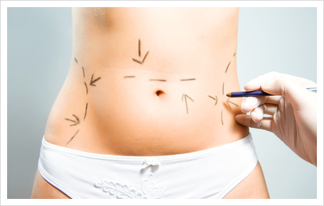
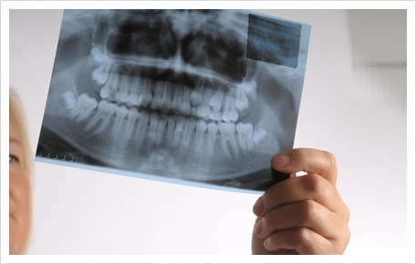

Experiencia
El doctor Alejandro Polito es cirujano plástico con una extensa experiencia en las últimas técnicas de cirugías aplicadas a la estética y reconstrucción que se usan en el mundo.
Ha realizado una amplia cantidad de procedimientos quirúrgicos y no quirúrgicos desde su graduación en 1985 y continúa capacitándose año tras año para brindar la mejor respuesta a sus inquietudes.
Luego de obtener el título de médico en la Facultad de medicina, Universidad del Salvador realizó la residencia completa de cirugía general y posteriormente la de cirugía plástica en el hospital Británico de Buenos Aires (1989-1992) cargos obtenidos por concurso.
Actualmente desarrolla su actividad con un equipo de trabajo conformado por cirujanos, enfermeras, asistentes, secretarias, anestesistas, dermatóloga, cosmetóloga; todos comprometidos con la excelencia, entendiendo que cada paciente es único y la atención debe ser personalizada.
VER MÁS
CIRUGÍA ESTETICA
REJUVENECIMIENTO FACIAL
El rejuvenecimiento facial puede combinar procedimientos como: Lifting, cirugía de párpados, liposucción de papada y mejilla, corrección de mentón y punta nasal, corrección de cola, cejas, etc., apoyados complementariamente con tratamientos no quirúrgicos.
El objetivo es implementar cambios con naturalidad, eligiendo siempre el tratamiento acorde a sus necesidades.
Cada caso es muy particular y esto es una síntesis de lo que tenemos disponible, por lo que siempre es necesario la evaluación y consulta personalizada para diseñar la estrategia.
PÁRPADOS

La cirugía de parpados es un procedimiento para extraer la grasa y el exceso de piel de los parpados superiores e inferiores. Corrige la caída de los parpados superiores y las bolsas que nos hacen parecer mayores de lo que somos.
Se realiza con anestesia local o combinada y normalmente no es necesario permanecer en el centro más de un par de horas después de la operación.
NARIZ
La cirugía de nariz o rinoplastia está orientada a modificar la forma de la nariz para lograr la armonía con los demás parámetros de la cara, teniendo en cuenta la personalidad, edad y sexo. La idea rectora es mantener la armonía y naturalidad.
Además de la corrección estética se trabaja para mejorar la función respiratoria que puede estar alterada por un tabique nasal desviado.
OREJAS
La cirugía del oído externo o otoplastia se realiza para modificar forma, tamaño y posición de las orejas. Se puede realizar en pacientes adolescentes y/o adultos pero no cabe duda que adquiere mucha importancia en niños de 4 a 7 años de edad, victimas de la burla a la que muchas veces están expuestos.
La oreja se aborda por el surco posterior y se trabaja sobre el cartílago auricular. Es un procedimiento con baja incidencia de complicaciones y rápida recuperación.
MAMARIA
En general los procedimiento quirúrgicos mamarios se realizan con anestesia combinada, no requieren internación, la paciente puede retirarse a su casa en 3 o 4 horas una vez que se recupera de la anestesia.
Lo habitual es que puedan retornar a su trabajo en 3 o 4 días luego de la cirugía y restablecer su actividad normal a los 15 días.
ABDOMEN
La abdominoplastia o mini-abdominoplastia son procedimientos indicados para mejorar el contorno del cuerpo.
A través de esta técnica se remueve el exceso de piel y grasa del abdomen corrigiendo la flacidez abdominal. En muchas oportunidades se combina con liposucción.
LIPOESCULTURA
Elimina el tejido adiposo que se acumula en varias regiones del cuerpo.
Con una fina cánula se absorbe la grasa localizada. La elección de la anestesia dependerá de la zona a operar y de la cantidad de grasa que deba aspirarse.
CIRUGÍA REPARADORA
RECONSTRUCCIÓN MAMARIA
La reconstrucción de mamas puede realizarse en forma inmediata, a los pocos meses o años después de la. La técnica a utilizarse depende de varios factores: El estado local de los tejidos, la forma y el tamaño de la mama contra-lateral, etc.
Se puede utilizar un implante mamario, tejidos propios de la paciente o la combinación de ambos.
FRACTURAS MAXILO FACIALES
La cirugía reconstructiva máxilofacial mejora la función y la estética de deformidades congénitas o causadas por accidentes, quemaduras y patologías en el territorio máxilofacial.
La utilización de nuevas técnicas y tecnologías ha permitido aumentar las posibilidades terapéuticas y mejorar ostensiblemente los resultados obtenidos.
CIRUGÍA PLÁSTICA INFANTIL
Los Principios que rigen la cirugía plástica en los niños, en términos generales, son similares a los que se utilizan en los adultos.
Sin embargo las técnicas deben ser adaptadas a ciertos factores anatómicos fisiológicos y psicológicos relacionados con la infancia.
QUEMADOS
Hay que tener en cuenta que el momento de comenzar a pensar en la reparación, se encuentra inmediatamente después de que la quemadura ha tenido lugar.
Si el cirujano que trata la lesión aguda no es el responsable de la reconstrucción posterior, es preferible la consulta temprana al cirujano plástico para marcar la estrategia que se deberá seguir en la reparación.
CICATRICES Y TATUAJES
Durante el proceso de recuperación de una herida resultante de un accidente, una cirugía, una quemadura, o de acné, la cicatrización ocurre siempre que varias capas de la piel hayan sido afectadas.
Una vez que la cicatriz se forma, nunca desaparece, aunque puede hacerse menos visible por diversos métodos.
LESIONES DE PIEL

Una lesión en la piel potencialmente maligna debe extirparse completamente y ser estudiada por el Patólogo quien establece un diagnóstico.
El cirujano plástico además, debe reconstruir el defecto dejado por la resección, minimizando las secuelas estéticas y funcionales.
NO QUIRURGICOS
BOTOX
La aplicación de este compuesto de tipo A, realizada en mínimas unidades alcanza para corregir principalmente las arrugas de la frente y el entrecejo, las del contorno de los ojos y alrededor de la boca.
El carácter inocuo del material botulínico, no requiere ningún testeo de alergia ni el uso de anestesia previa. El efecto dura aproximadamente cinco meses y la paciente puede continuar con sus actividades habituales.
RELLENOS DE ARRUGAS FACIALES
Para arrugas más profundas o surcos faciales (Ej.: Peribucales, surcos nasogenianos) se utilizan diferentes sustancias de relleno que son inyectadas o implantadas en la piel.
El material se elegirá de acuerdo al tipo de arruga a tratar, la zona y expectativas de durabilidad. Esos materiales también se usan para realzar los bordes de los labios o aumentar su volumen.
REJUVENECIMIENTO FACIAL CON LUZ PULSADA
La luz pulsada intensa es una tecnología altamente efectiva para el tratamiento de manchas oscuras (solares), manchas rojas o enrojecimiento difuso, rosácea y vasitos dilatados (telangiectasias).
Además, produce un estímulo del colágeno por lo cual mejora la textura de la piel, arrugas finas y superficiales, cicatrices leves de acné y poros dilatados.
PLASMA RICO EN PLAQUETAS
El plasma rico en plaquetas es un procedimiento médico que se realiza en el consultorio con el fin de generar rejuvenecimiento en la piel.
Tiene mucha utilidad en diferentes campos de la medicina. El plasma sanguíneo contiene plaquetas y éstas a su vez poseen unas proteínas llamadas factores de crecimiento.
Estos factores tienen la habilidad de generar tejidos donde se ubican. En medicina estética regeneran células nuevas, nuevos vasos sanguíneos, nuevos colágenos y nueva elastina, acelerando así el proceso de eliminación de las células más dañadas, sobre todo el proceso de rejuvenecimiento facial.
DÉPILACION MÉDICA CON IPL
La luz emitida por el equipo de luz pulsada intensa es absorbida por el pigmento del vello y se transmite al bulbo piloso, al cual llega en forma de calor produciendo su debilitamiento, sin dañar la piel circundante.
Se puede tratar cualquier zona del cuerpo y en ambos sexos.
El número de sesiones varía según las condiciones propias de cada paciente, el área a tratar, el color y el grosor del pelo y el tipo de piel.
RADIOFRECUENCIA

Este sistema proporciona un estiramiento y tensado de la piel, mediante un dispositivo especial que permite reducir la flaccidez y recuperar el contorno facial.
COSMIATRÍA
La Cosmiatría es un área de la Dermatología que se encarga de agrupar todas las técnicas cosméticas. Es una actividad que busca darle armonía al cuerpo y al rostro.
- Tratamientos corporales (anti-celulíticos, reductores, flacidez).
- Drenaje linfático manual.
- Tratamientos faciales.
- Punta de diamante.
- Radiofrecuencia facial y corporal.
- Aparatología.
CONTACTO
Clinica Dr. Alejandro Polito
home25 de mayo 470, Gualeguaychú, Entre Ríos
phone(+54) (3446) 433142
Consultorio en Capital Federal
homeJunin 1040, CABA, Buenos Aires
phone(+54) (11) 4823-3749
Hepta Centro Médico en San Isidro
homeAv. Fondo de la Legua 577, San Isidro, Gran Buenos Aires
phone(+54) (11) 4763-7700